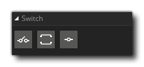

La biblioteca de acciones de Conmutadores contiene aquellas acciones que se requieren para crear declaraciones de cambio en el código de acción del juego. En una serie de situaciones, desea permitir que sus instancias completen una acción según un valor particular, y aunque puede hacerlo usando una cantidad de declaraciones "si" consecutivas, esto puede complicarse cuando las opciones posibles superan dos o tres. En estos casos, es mejor usar la acción "cambiar". Una acción de cambio funciona de la siguiente manera:
- Usted proporciona un valor a (generalmente de algún tipo de expresión o variable)
- El valor se compara con el valor asignado a las diversas declaraciones de "caso"
- Si el valor es el mismo que el valor del caso, el contenido del caso se realiza de lo contrario se evalúa el siguiente caso, etc.
- Una vez que se ha realizado un caso o se han evaluado y fallado todos los casos, el código continuará desde el final del cambio.
- Si todos los casos fallaron y tiene un caso predeterminado, se realizará antes de que el código continúe desde el final del cambio.
La biblioteca de Switches tiene las siguientes acciones:
| Cambiar | |
 | Caso |
 | Defecto |